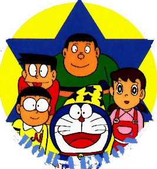

Doraemon

From the Anime Pocket Guide:
Cast:
Nobita ..................................... Noriko Ohara
Papa .................................... Yuzuru Fujimoto
Suneo .................................. Kaneta Kimotsuki
Dekisugi ............................... Sumiko Shirakawa
Dorami ................................... Keiko Yokozawa
Jyaian's mother ............................. Kazuyo Aoki
Yamada-kun ................................. Kyoko Yamada
Teacher ................................. Ryouichi Tanaka
Description:
This is a kids' show about a cat/robot/oversized possum (take
your pick...even though he's *supposed* to be a cat) called
Doraemon. He lives with a schoolboy whose life is pretty normal.
In this group of friends, there is a local girl and a bully.
Their lives are pretty normal for their age (elementary school),
until Doraemon gets involved. Doraemon looks like a blue and
white otter with a hormone problem. He has a pouch on his tummy
which can produce just about *anything*. Shrinking guns, magic
pools and a futuristic alarm system are among the things that
he's pulled out of that pouch. Bizarre things start happening,
particularly if the local bully gets his hands on the gadgets.
The series is broken up into 2 15-minute segments per episode
and is pretty much light entertainment.
Other Resources
Anime Video Game Resource Center © 1998 by Luis A. Cruz